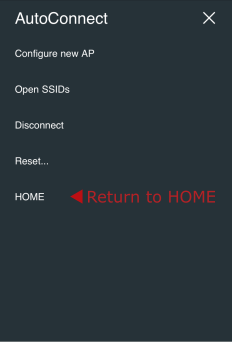

Advanced usage
Advanced usage¶
404 handler¶
Registering the "not found" handler is a different way than ESP8266WebServer (WebServer as ESP32). The onNotFound of ESP8266WebServer/WebServer does not work with AutoConnect. AutoConnect overrides ESP8266WebServer::onNotFound/WebServer::onNotFound to handle a captive portal. To register "not found" handler, use AutoConnect::onNotFound.
Access to saved credentials¶
AutoConnect stores the established WiFi connection in the EEPROM of the ESP8266/ESP32 module and equips the class to access it from the sketch. You can read, write or erase the credentials using this class individually. It's AutoConnectCredential class which provides the access method to the saved credentials in EEPROM. Refer to section Saved credentail access for details.
Automatic reconnect¶
When the captive portal is started, SoftAP starts and the STA is disconnected. The current SSID setting memorized in ESP8266 will be lost but then the reconnect behavior of ESP32 is somewhat different from this.
The WiFiSTAClass::disconnect function implemented in the arduino-esp32 has extended parameters than the ESP8266's arduino-core. The second parameter of WiFi.disconnect on the arduino-esp32 core that does not exist in the ESP8266WiFiSTAClass has the effect of deleting the currently connected WiFi configuration and its default value is "false". On the ESP32 platform, even if WiFi.disconnect is executed, WiFi.begin() without the parameters in the next turn will try to connect to that AP. That is, automatic reconnection is implemented in arduino-esp32 already. Although this behavior appears seemingly competent, it is rather a disadvantage in scenes where you want to change the access point each time. When explicitly disconnecting WiFi from the Disconnect menu, AutoConnect will erase the AP connection settings saved by arduino-esp32 core. AutoConnect's automatic reconnection is a mechanism independent from the automatic reconnection of the arduino-esp32 core.
If the autoReconnect option of the AutoConnectConfig class is enabled, it automatically attempts to reconnect to the disconnected past access point. When the autoReconnect option is specified, AutoConnect will not start SoftAP immediately if the first WiFi.begin fails. It will scan WiFi signal and the same connection information as the detected BSSID is stored in EEPROM as AutoConnect's credentials, explicitly apply it with WiFi.begin and rerun.
AutoConnect Portal; AutoConnectConfig Config; Config.autoReconnect = true; Portal.config(Config); Portal.begin();
An autoReconnect option is available to AutoConnect::begin without SSID and pass passphrase.
An autoReconnect will work if SSID detection succeeded
An autoReconnect will not effect if the SSID which stored credential to be connected is a hidden access point.
Auto save Credential¶
By default, AutoConnect saves the credentials of the established connection in EEPROM. You can disable it with the autoSave parameter specified by AutoConnectConfig.
AutoConnect Portal; AutoConnectConfig Config; Config.autoSave = AC_SAVECREDENTIAL_NEVER; Portal.config(Config); Portal.begin();
In ESP32, the credentials for AutoConnect are not in NVS
The credentials used by AutoConnect are not saved in NVS on ESP32 module. ESP-IDF saves the WiFi connection configuration to NVS, but AutoConnect stores it on the EEPROM partition. You can find the partition table for default as default.csv
Captive portal start detection¶
The captive portal will only be activated if the first WiFi::begin fails. Sketch can detect with the AutoConnect::onDetect function that the captive portal has started. For example, the sketch can be written like as follows that turns on the LED at the start captive portal.
AutoConnect Portal; bool startCP(IPAddress ip) { digitalWrite(BUILTIN_LED, HIGH); Serial.println("C.P. started, IP:" + WiFi.localIP().toString()); return true; } void setup() { Serial.begin(115200); pinMode(BUILTIN_LED, OUTPUT); digitalWrite(BUILTIN_LED, LOW); Portal.onDetect(startCP); if (Portal.begin()) { digitalWrite(BUILTIN_LED, LOW); } } void loop() { Portal.handleClient(); }
Captive portal timeout control¶
AutoConnect has two parameters for timeout control. One is a timeout value used when trying to connect to the specified AP. It behaves the same as general timeout control in connection attempt by WiFi.begin. This control is specified by the third parameter of AutoConnect::begin. The default value is macro defined by AUTOCONNECT_TIMEOUT in the AutoConnectDef.h file.
The other timeout control is for the captive portal itself. It is useful when you want to continue sketch execution with offline even if the WiFi connection is not possible. You can also combine it with the immediateStart option to create sketches with high mobility.
The timeout of the captive portal is specified together with AutoConnectConfig::portalTimeout as follows.
#include <ESP8266WiFi.h> #include <ESP8266WebServer.h> #include <AutoConnect.h> AutoConnect portal; AutoConnectConfig config; void setup() { config.portalTimeout = 60000; // It will time out in 60 seconds portal.config(config); portal.begin(); } void loop() { if (WiFi.status() == WL_CONNECTED) { // Some sketch code for the connected scene is here. } else { // Some sketch code for not connected scene is here. } portal.handleClient(); }
bool acEnable; void setup() { config.portalTimeout = 60000; // It will time out in 60 seconds portal.config(config); acEnable = portal.begin(); if (!acEnable) { portal.end(); } } void loop() { if (WiFi.status() == WL_CONNECTED) { // Some sketch code for the connected scene is here. } else { // Some sketch code for not connected scene is here. } if (acEnable) { portal.handleClient(); } }
There is another option related to timeout in AutoConnectConfig. It can make use of the captive portal function even after a timeout. The AutoConnectConfig::retainPortal option will not stop the SoftAP when the captive portal is timed out. If you enable the ratainPortal option, you can try to connect to the AP at any time while continuing to sketch execution with offline even after the captive portal timed-out. Compared to the above code specified no option with the following example code, the captive portal will remain available even after a timeout without changing the logic of the sketch.
#include <ESP8266WiFi.h> #include <ESP8266WebServer.h> #include <AutoConnect.h> AutoConnect portal; AutoConnectConfig config; void setup() { config.portalTimeout = 60000; // It will time out in 60 seconds config.retainPortal = true; portal.config(config); portal.begin(); } void loop() { if (WiFi.status() == WL_CONNECTED) { // Some sketch code for the connected scene is here. } else { // Some sketch code for not connected scene is here. } portal.handleClient(); }
Casts the HTML pages to be add-on into the menu¶
If your sketch handles web pages, you can embed the pages into the AutoConnect menu in continuance enjoying the utility of the WiFi connection feature. Unlike the custom Web pages by AutoConnectElements, this allows to legacy web pages registered by ESP8266WebServer::on or WebServer::on function.
You can use AutoConnectAux only constructed with the URI of the page to be embedding. AutoConnectElements is not required. The basic procedure for this as follows:
- Declare AutoConnectAux for each legacy page. It includes the URI of the page and item string which will display in the AutoConnect menu.
- Sketch the legacy page handlers.
- Register those handler functions to ESP8266WebServer/WebServer with the on function.
- Register AutoConnectAux declared with #1 to AutoConnect using AutoConnect::join function. It serves as a menu item.
- Begin the portal.
- Performs AutoConnect::handleClient in the loop function.
For details, see section Constructing the menu of Examples page.
Change menu title¶
Although the default menu title is AutoConnect, you can change the title by setting AutoConnectConfig::title. To set the menu title properly, you must set before calling AutoConnect::begin.
AutoConnect Portal; AutoConnectConfig Config; void setup() { // Set menu title Config.title = "FSBrowser"; Portal.config(Config); Portal.begin(); }
Executing the above sketch will rewrite the menu title for the FSBrowser as the below.


Change the menu labels¶
You can change the label of the AutoConnect menu item by rewriting the default label letter in AutoConnectLabels.h macros. However, changing menu items letter influences all the sketch's build scenes.
#define AUTOCONNECT_MENULABEL_CONFIGNEW "Configure new AP" #define AUTOCONNECT_MENULABEL_OPENSSIDS "Open SSIDs" #define AUTOCONNECT_MENULABEL_DISCONNECT "Disconnect" #define AUTOCONNECT_MENULABEL_RESET "Reset..." #define AUTOCONNECT_MENULABEL_HOME "HOME" #define AUTOCONNECT_BUTTONLABEL_RESET "RESET"
Combination with mDNS¶
With mDNS library, you can access to ESP8266 by name instead of IP address after connection. The sketch can start the MDNS responder after AutoConnect::begin.
#include <ESP8266WiFi.h> #include <ESP8266mDNS.h> #include <ESP8266WebServer.h> AutoConnect Portal; void setup() { if (Portal.begin()) { if (MDNS.begin("esp8266")) { MDNS.addService("http", "tcp", 80); } } } void loop() { Portal.handleClient(); }
Debug print¶
You can output AutoConnect monitor messages to the Serial. A monitor message activation switch is in an include header file AutoConnectDefs.h of library source. Define AC_DEBUG macro to output the monitor messages.1
#define AC_DEBUG
Disable the captive portal¶
It can also prevent the captive portal from starting even if the connection at the first WiFi.begin fails. In this case, AutoConnect::begin behaves same as WiFi.begin.
For disabling the captive portal, autoRise sets to false with AutoConnectConfig.
AutoConnect portal; AutoConnectConfig acConfig; acConfig.autoRaise = false; portal.config(acConfig); portal.begin();
Make SSID of SoftAP unique¶
You can change SoftAP's SSID and password programmatically when the captive portal starts up. By using chip specific ID of esp8266/esp32 you can make SSID of SoftAP unique. SSID and password for SoftAP is AutoConnectConfig::apid and AutoConnectConfig::psk.
AutoConnect portal; AutoConnectConfig acConfig; acConfig.apid = "ESP-" + String(ESP.getChipId(), HEX); acConfig.psk = YOUR_PASSWORD; portal.config(acConfig); portal.begin();
Obtaining chip ID for ESP32
acConfig.apid = "ESP-" + String((uint32_t)(ESP.getEfuseMac() >> 32), HEX);
Move the saving area of EEPROM for the credentials¶
By default, the credentials saving area is occupied from the beginning of EEPROM area. ESP8266 Arduino core document says that:
The following diagram illustrates flash layout used in Arduino environment:
|--------------|-------|---------------|--|--|--|--|--| ^ ^ ^ ^ ^ Sketch OTA update File system EEPROM WiFi config (SDK)
and
EEPROM library uses one sector of flash located just after the SPIFFS.
Also, the placement of the EEPROM area of ESP32 is described in the partition table. So in the default state, the credential storage area used by AutoConnect conflicts with data owned by the user sketch. It will be destroyed together saved data in EEPROM by user sketch and AutoConnect each other. But you can move the storage area to avoid this.
The boundaryOffset in AutoConnectConfig specifies the start offset of the credentials storage area. The default value is 0.
On-demand start the captive portal¶
If you do not usually connect to WiFi and need to establish a WiFi connection if necessary, you can combine the autoRise option with the immediateStart option to achieve on-demand connection. This behavior is similar to the WiFiManager's startConfigPortal function. In order to do this, you usually configure only with AutoConnectConfig in setup() and AutoConnect::begin handles in loop().
AutoConnect Portal; AutoConnectConfig Config; void setup() { Config.autoRise = false; Config.immediateStart = true; Portal.config(Config); } void loop() { if (digitalRead(TRIGGER_PIN) == LOW) { while (digitalRead(TRIGGER_PIN) == LOW) yield(); Portal.begin(); } Portal.handleClient(); }
Refers the hosted ESP8266WebServer/WebServer¶
Constructing an AutoConnect object variable without parameters then creates and starts an ESP8266WebServer/WebServer inside the AutoConnect. This object variable could be referred by AutoConnect::host function to access ESP8266WebServer/WebServer instance as like below.
AutoConnect Portal; Portal.begin(); ESP8266WebServer& server = Portal.host(); server.send(200, "text/plain", "Hello, world");
When host() is valid
The host() can be referred at after AutoConnect::begin.
Usage for automatically instantiated ESP8266WebServer/WebServer¶
The sketch can handle URL requests using ESP8266WebServer or WebServer that AutoConnect started internally. ESP8266WebServer/WebServer instantiated dynamically by AutoConnect can be referred to by AutoConnect::host function. The sketch can use the 'on' function, 'send' function, 'client' function and others by ESP8266WebServer/WebServer reference of its return value.
#include <ESP8266WiFi.h> #include <ESP8266WebServer.h> #include <AutoConnect.h> AutoConnect Portal; void handleRoot() { ESP8266WebServer& IntServer = Portal.host(); IntServer.send(200, "text/html", "Hello, world"); } void handleNotFound() { ESP8266WebServer& IntServer = Portal.host(); IntServer.send(404, "text/html", "Unknown."); } void setup() { bool r = Portal.begin(); if (r) { ESP8266WebServer& IntServer = Portal.host(); IntServer.on("/", handleRoot); Portal.onNotFound(handleNotFound); // For only onNotFound. } } void loop() { Portal.host().handleClient(); Portal.handleRequest(); /* or following one line code is equ. Portal.handleClient(); */ }
ESP8266WebServer/WebServer function should be called after AutoConnect::begin
The sketch cannot refer to an instance of ESP8266WebServer/WebServer until AutoConnect::begin completes successfully.
Do not use with ESP8266WebServer::begin or WebServer::begin
ESP8266WebServer/WebServer is already running inside the AutoConnect.
Use with the PageBuilder library¶
In ordinary, the URL handler will respond the request by sending some HTML. PageBuilder library is HTML assembly aid. it can handle predefined HTML as like a template and simplify an HTML string assemble logic, and also the generated HTML send automatically.
An example sketch used with the PageBuilder as follows and it explains how it aids for the HTML generating. Details for Github repository.

Configuration functions¶
Configuration for Soft AP and captive portal¶
AutoConnect will activate SoftAP at failed the first WiFi.begin. It SoftAP settings are stored in AutoConnectConfig as the following parameters. The sketch could be configured SoftAP using these parameters, refer the AutoConnectConfig API for details.
- IP address of SoftAP activated.
- Gateway IP address.
- Subnet mask.
- SSID for SoftAP.
- Password for SoftAP.
- Channel.
- SoftAP name.
- Hidden attribute.
- Station hostname.
- Auto save credential.
- Offset address of the credentials storage area in EEPROM.
- Captive portal time out limit.
- Maintain portal function even after a timeout.
- Length of start up time after reset.
- Automatic starting the captive portal.
- Start the captive portal forcefully.
- Auto reset after connection establishment.
- Home URL of the user sketch application.
- Menu title.
AutoConnect::config before AutoConnect::begin
AutoConnect::config must be executed before AutoConnect::begin.
Assign user sketch's home path¶
HOME for returning to the user's sketch homepage will display at the bottom of the AutoConnect menu. It could be set using the AutoConnect::home function.

Change SSID and Password for SoftAP¶
An esp8266ap is default SSID name for SoftAP of captive portal and password is 12345678 for ESP8266. Similarly, esp32ap and 12345678 for ESP32. You can change both by setting apid and psk.
AutoConnect portal; AutoConnectConfig config; void setup() { config.apid = "ap_portal"; config.psk = "new_password"; portal.config(config); portal.begin(); }
Also, you can specify the SSID, password for SoftAP with the constructor of the AutoConnectConfig as below.
AutoConnect portal; AutoConnectConfig config("ap_portal", "new_passwrod"); void setup() { portal.config(config); portal.begin(); }
Relocate the AutoConnect home path¶
A home path of AutoConnect is /_ac by default. You can access from the browser with http://IPADDRESS/_ac. You can change the home path by revising AUTOCONNECT_URI macro in the include header file as AutoConnectDef.h.
#define AUTOCONNECT_URI "/_ac"
Static IP assignment 2¶
It is also possible to assign static IP Address to ESP8266/ESP32 in STA mode. By default DHCP is enabled and it becomes the IP address assigned by the DHCP server with WiFi.begin.
To assign a static IP to ESP8266/ESP32 with WIFI_MODE_STA, the following parameters are required:
- IP address.
- Gateway address.
- Subnet mask.
- Primary DNS server.
- Secondary DNS server. (optional)
The above parameters must be executed before AutoConnect::begin as arguments of AutoConnectConfig.
AutoConnect portal; AutoConnectConfig Config; Config.staip = IPAddress(192,168,1,10); Config.staGateway = IPAddress(192,168,1,1); Config.staNetmask = IPAddress(255,255,255,0); Config.dns1 = IPAddress(192,168,1,1); portal.config(Config); portal.begin();
Station host name¶
AutoConnectConfig::hostName assigns the station DHCP hostname which complies with RFC952. It must satisfy the following constraints.
- Up to 24 characters
- Only the alphabet (a-z, A-Z), digits (0-9), minus sign (-)
- No '-' as last character